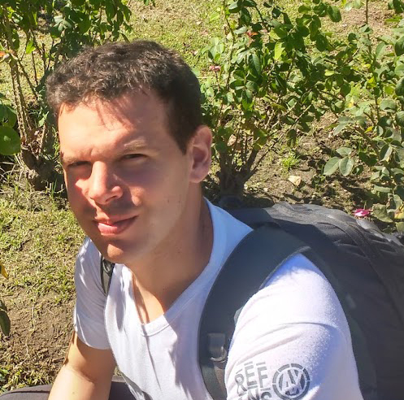

Currículum Vitae
Leandro Gonzalez

Descripción Personal
Soy Desarrollador Web Jr. autodidacta, especializado sobre todo en Front-End (HTML, CSS y JavaScript). Actualmente estoy en la búsqueda de mi primer empleo o pasantía como programador para adquirir experiencia profesional y mejorar mis habilidades.
Certificados
- Curso de HTML y CSS
- Master en CSS: Responsive, SASS, Flexbox, Grid y Bootstrap
- Master en JavaScript: JS, jQuery, JSON y TypeScript
- GIT+GitHub: Todo un sistema de control de versiones de cero
Skills
- HTML
- JavaScript
- TypeScript
- Photoshop
- Wordpress
- Git
- GitHub
Hobbies
- Guitarra
- Economía
- Inversiones
- Política
- Historia
- Películas
Expectativas
Estoy estudiando programación para tener una habilidad con rápida salida laboral, bien pagada y que aparte ofrece la posibilidad de rtabajar desde donde quieras. Mi objetivo es ser nómada digital y ganar en dólares.